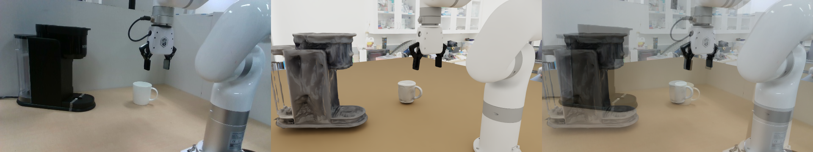
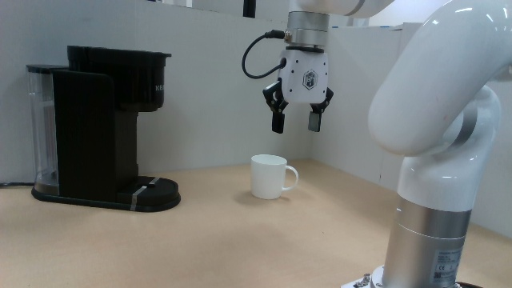
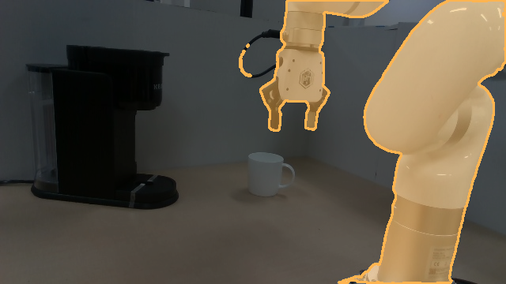
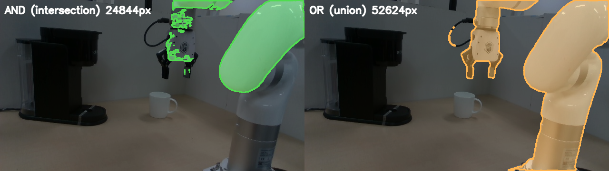
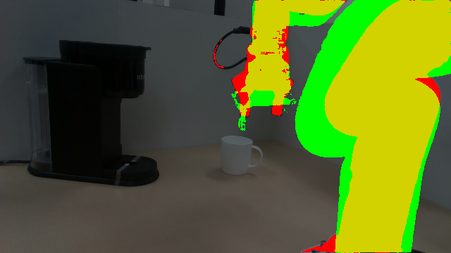
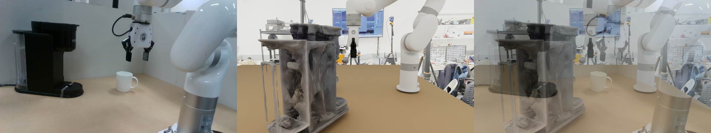

Solve the IsaacSim render camera so it matches a real RealSense photo — fully automated (SAM silhouette IoU + centroid/area + DINOv3 + RGB), staying local to a seed pose. So synthetic xArm7 data is rendered from the same viewpoint + intrinsics as the real robot. · 2026-05-25
# 0) real robot silhouette (run with "robot arm" too, then OR them)
python sam3_text_mask.py <real.png> --prompt "robot"
# 1) launch the PERSISTENT IsaacSim watch-renderer (window opens ONCE, stays open)
bash scripts/xarm7_runner_v2.sh --mug-variant corl_mug --cm-variant corl_cm \
--home-deg "0,-30,0,30,0,60,0" --demo-from-npz --rs-d435i color --cam-w 1280 --cam-h 720 \
--table-asset wooden --table-lift-cm=-0.81 --no-depth --no-semantics --capture-rollout \
--rollout-out /tmp/cam_watch --cam-match-watch <pose.json> --cam-match-real <real.png>
# 2) auto-optimize the camera (drives the watch via the json; no restarts)
python optimize_cam_pose.py --w-cen 1.0 --w-area 0.6 --w-dino 0.5 --refine 22 --passes 4Output → data/corl_eval_cam_pose.json + best_overlay.png; feed the pose to data-gen via --cam-baseline-override + --rs-d435i color.

For sim-to-real, synthetic data must be rendered from the same camera as the real robot. We hold the xArm7 at its home pose in IsaacSim and search the 6-DOF camera pose (+ fix the RealSense intrinsic) until the rendered robot silhouette matches a real photo. The whole loop is automated and runs against the actual IsaacSim renderer — not a viser approximation — so the matched pose transfers directly to data-gen.
Text-prompt SAM3 segments the robot in the real RGB. "robot" catches the base column; "robot arm" is cleaner on the gripper — OR them for the full silhouette. This mask is the alignment target.
sam3_text_mask.py <img> --prompt "robot" → <img>_robot_mask.png



A gated, additive mode in the runner: build the scene + hold the arm at home once, then loop watching a JSON for {cam_pos, cam_target} and re-render the overlay on each change — no restart, window stays open. ~600 renders become practical (≈1–2 s each vs ~25 s per fresh launch).
xarm7_runner_v2.py — early-exit branch before the episode loop (never touches data-gen paths)
.venv) and the IsaacSim renderer (.venv-isaacsim5) talk through the JSON + overlay PNG.Plain RGB loss games (a top-down view can match masked pixels without aligning). The discriminative signal is the silhouette IoU — SAM3 the sim render's robot, IoU vs the real mask. Centroid + area terms break the IoU plateau by explicitly recentering + rescaling; DINOv3 + RGB refine appearance.
optimize_cam_pose.py — loss = (1−IoU) + 0.2·rgb + w_dino·dino + w_cen·centroid + w_area·|log(area ratio)|

| term | role | weight |
|---|---|---|
| 1 − IoU | silhouette overlap (anti-gaming anchor) | 1.0 |
| centroid dist | recenter the robot | 1.0 |
| |log area ratio| | match scale (the 27% spill) | 0.6 |
| DINOv3 cos-dist | semantic fine alignment (mask-gated) | 0.5 |
| RGB L1 (mask-gated) | appearance tie-break | 0.2 |
Stay local to a seed pose — a wide global search picks horrible top-down/side views. Small random probes around the seed, then SPSA-Adam in shrinking-step passes (each restarts from the best, early-stops on no gain). Drives the watch via the JSON; reads the sim panel back from the overlay.
optimize_cam_pose.py --from-saved --passes N --step-scale s --seed k
| stage | IoU | what unlocked it |
|---|---|---|
| RGB-only | — (gamed) | converged to a top-down view |
| + SAM silhouette IoU | 0.70 | discriminative shape signal |
| + centroid + area | 0.90 | broke the plateau (recenter + rescale) |
| + RealSense FOV | 0.894 | correct perspective (stage 5) |
The match must use the real camera's FOV, not just compensate scale with distance. RealSense D435i color = focal 17.35 mm, aperture 24×13.5 mm → HFOV 69.4°, fx=925.
sim.set_camera_view() resets the Kit camera focal every call — so the watch was silently rendering at the Kit default (~18.1 mm), not the preset. Fix: re-apply _apply_cam_intrinsics(args.rs_d435i) after every set_camera_view in the watch loop. Then re-optimize position at the true FOV.
Matched camera (saved → data/corl_eval_cam_pose.json):
cam_pos = [-0.2678, 0.4786, 0.3466]
cam_target = [ 0.5892, -0.0782, 0.0808]
intrinsic = RealSense D435i color (HFOV 69.4°, fx=925, focal 17.35 mm)Drop into data-gen (run_corl_xarm7_datagen.sh / the runner):
--cam-baseline-override="-0.2678,0.4786,0.3466,0.5892,-0.0782,0.0808" \
--rs-d435i color --cam-w 1280 --cam-h 720| file | role |
|---|---|
sam3_text_mask.py | text-prompt SAM3 → binary mask + overlay (real & sim robot) |
xarm7_runner_v2.py --cam-match-watch | persistent IsaacSim watch-render (additive, gated, RealSense intrinsic per-render) |
optimize_cam_pose.py | auto-optimizer: IoU+centroid+area+DINOv3+RGB, local Sobol→SPSA coarse-to-fine |
render_corl_cam_match.py | one-shot home-pose render + [real|sim|blend] overlay (no watch) |
viser_cam_match_corl.py | manual viser drag-to-match (coarse / sanity), with an IsaacSim-render button |
data/corl_eval_cam_pose.json | saved pose + intrinsic; consumed via --cam-baseline-override |
Venvs: optimizer + SAM3 + DINOv3 in ~/Desktop/real2render2real/.venv; the IsaacSim watch in .venv-isaacsim5 (via xarm7_runner_v2.sh). DINOv3 ViT-L/16 weights from the torch-hub cache.